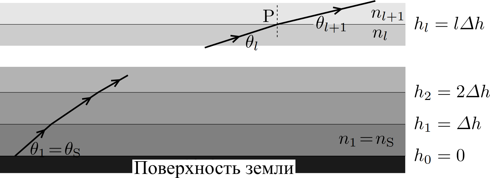
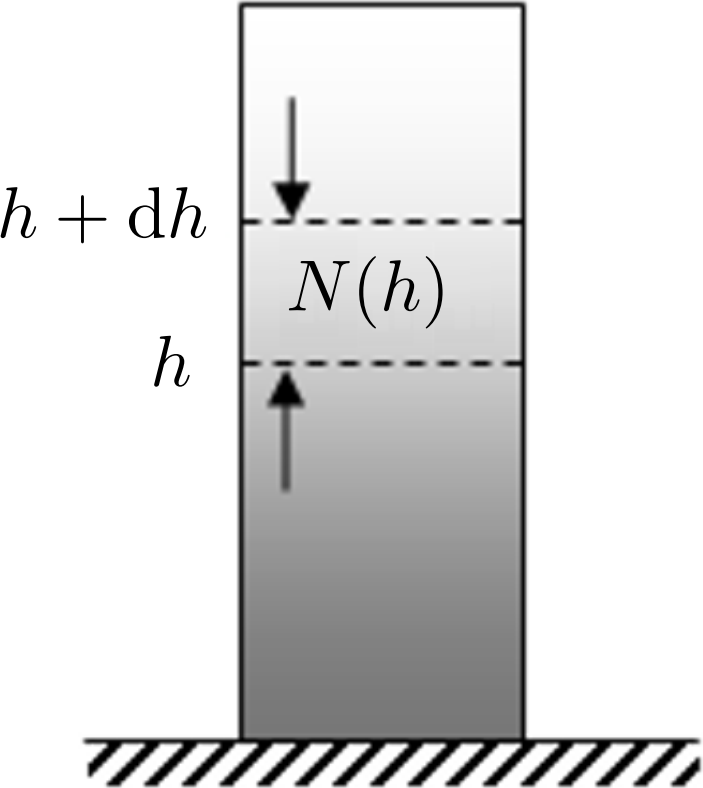
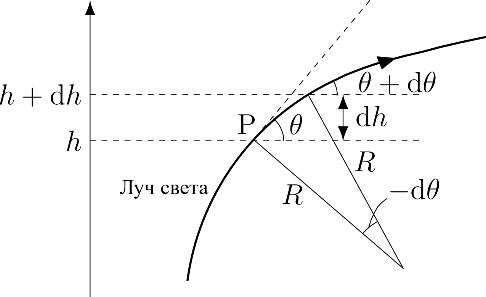

W23 (2023) — English translation
In ordinary life, it seems to us that the rays of light in the atmosphere surrounding us move in a straight line. However, this is not the case, and the effects of ray bending are invisible only because the refractive index of air is practically indistinguishable from unity. On large scales and when certain atmospheric phenomena occur, it can no longer be neglected. In the Earth's atmosphere, an example of such phenomena is a mirage, and in the atmospheres of other planets - for example, Venus - there is an almost unlimited distance to the horizon. In this problem we will look at each of these phenomena in detail.
Mirages occur when there is a large temperature difference between the earth's surface and the atmosphere. One of their many examples is the Kuril Islands, mirages of which can be observed in the Kunashir Strait in Japan in the spring due to the cooling of the air over the sea. The atmosphere can be considered an ideal gas, consisting of identical molecules of mass $m$. It is known that for most gases, including gas in the atmosphere, the following formula is applicable for the dependence of the refractive index $n$ of atmospheric air: \[n^2-1=\alpha N,\] where $N$ is the concentration of molecules, and $\alpha$ is a coefficient depending on the nature of the gas. When solving the problem, assume that the surface of the water is horizontal. The temperature of the atmosphere $T$ increases with increasing altitude $h$ above sea level, and the refractive index of the air also changes. Neglect the effect of gravity, assuming atmospheric pressure to be $p_0=1~\text{атм}$ regardless of altitude. The refractive index of the atmosphere under normal conditions ($T_0=273~\text{К}$, $p_0=1~\text{атм}$) is $n=1.00028$. Consider that temperature and refractive index depend only on $h$. Consider Snell's law for rays emitted at an angle of $\theta_S$ from the surface of the earth. Let us divide the atmosphere into thin layers with a thickness of $\Delta h$, as shown in Figure 1. We will assume that the refractive index of the atmosphere at an altitude from $\Delta h(l-1)$ to $\Delta hl$ is constant and equal to $n_l$, and the angle between the light ray and the horizon at this height is $\theta_l$, where $l=1,2,3,\ldots$. The refractive index of the atmosphere at the surface is $n_1=n_S$.

Assume that the temperature $T(h)$ increases linearly with $h$ in the range $0\leq h\leq H$ and is constant at $h > H$: \[T(h)=\begin{cases}T_S+(T_\mathrm H-T_\mathrm S)\frac hH&0\leq h\leq H\\T_\mathrm H&H < h\end{cases},\]where $T_\mathrm S=T(0) < T_\mathrm H=T(H)$.
Considering that $\frac{T_H-T_S}{T_S}\ll1$, the dependence of the concentration $N(h)$ at height $h$ ($0 < h < H$) can also be considered linear with good accuracy, i.e.: \[\frac{N(h)}{N_\mathrm S}=1-\frac{N_\mathrm S-N_\mathrm H}{N_\mathrm S}\frac hH,\] where $N_\mathrm S=N(0)$, $N_\mathrm H=N(H)$.
Let us consider the trajectory of a ray emitted at an angle $\theta_\mathrm S$ to the horizon. We will assume that upon reaching the top point of the trajectory $h_\mathrm m(\le H)$ the beam begins to move back down. Let us direct the axis $x$ horizontally in the plane of beam propagation, then its trajectory $h(x)$ must satisfy the differential equation: \[\frac{\mathrm dh}{\mathrm dx}=\operatorname{tg}\theta=\pm\sqrt{\frac1{\cos^2\theta}-1},\], with the sign $+$ corresponding to the rise, and $-$ to the descent of the beam.
Taking into account the above, the equation for determining the ray trajectory can be written as \[\frac{\mathrm dh}{\mathrm dx}=\sqrt{a\left(1-\frac hb\right)},\quad a=a_\mathrm m\frac{h_\mathrm m}H.\]
It is known that the solution to this equation for a ray passing through the origin $(x,h)=(0,0)$ is a parabola \[h=cx+dx^2.\]
Let the numerical values $T_\mathrm S=275~\text{К}$, $T_\mathrm H=290~\text{К}$, $H=20~\text{м}$ be given. The observer is on the Japanese coast ($h=0$) and observes the Kuril Islands above the surface of the water. Let the distance to the islands be $L$. The observer sees them from the same angle at which he would see the islands if they were at the same distance at a height of $h_\mathrm g$ above the surface of the water.
In part $\bf A$ the refractive index of the atmosphere was calculated without taking into account the influence of gravity and taking into account temperature changes only at the surface of the earth. As the height above the surface increases, the temperature, of course, decreases, but it is gravity that has the greatest influence on the concentration of the atmosphere. Therefore, in the future, for simplicity, we will assume that the atmospheric temperature $T$ is constant everywhere and consider the change in the refractive index only due to gravity. The acceleration due to gravity is $g$. Let us consider the balance of forces acting on a section of the atmosphere in the region of heights from $h$ to $h+\mathrm dh$, as shown in Figure 2. Let us denote the concentration of air molecules as $N(h)$.

As in part $\bf A$, we will assume that the refractive index at height $h$ is equal to $n(h)$, and the angle with the horizon at which the beam moves at height $h$ will be denoted as $\theta(h)$. The curvature of the earth's surface can be neglected. The trajectory of the beam in the atmosphere is a curve, which at each point can be approximated by a section of a circle of radius $R$. This value $R$ is called the radius of curvature of the beam path at this point (see Figure 3).

Let us now take into account the curvature of the Earth. Its radius is $R_\mathrm E=6.4\cdot10^3~\text{км}$. The remaining numerical values are $m=29\cdot1.66\cdot10^{-27}~\text{kg}$, $T=300~\text{К}$, $k_\mathrm B=1.38\cdot10^{-23}~\frac{\text{Дж}}{\text{К}}$, $g=9.8~\frac{\text{м}}{\text{с}^2}$.
The atmosphere of Venus consists of $\mathrm{CO_2}$, which can be considered ideal and for which all the results obtained above can be applied. The atmospheric pressure on the surface of Venus is $p_\mathrm V=93~\text{атм}$ ($1~\text{атм}=1.0\cdot10^5~\text{Па}$), and the temperature is $T_\mathrm V=740~\text{К}$. The radius of Venus is $R_\mathrm V=6.0\cdot10^3~\text{км}$, the acceleration of gravity on its surface is $g_\mathrm V=8.9~\frac{\text{м}}{\text{с}^2}$, the mass of the molecule is $\mathrm{CO_2}$ $m_\mathrm C=44\cdot1.66\cdot10^{-27}~\text{kg}$. For the refractive index on Venus, the equation is valid: \[n^2=1+\alpha_VN\] with a coefficient $\alpha_\mathrm V=4\pi a_\mathrm C^3$, where $a_\mathrm C=1.4\cdot10^{-10}~\text{м}$ is the effective size of the molecule $\mathrm{CO_2}$.
Source: https://pho.rs/p/2901